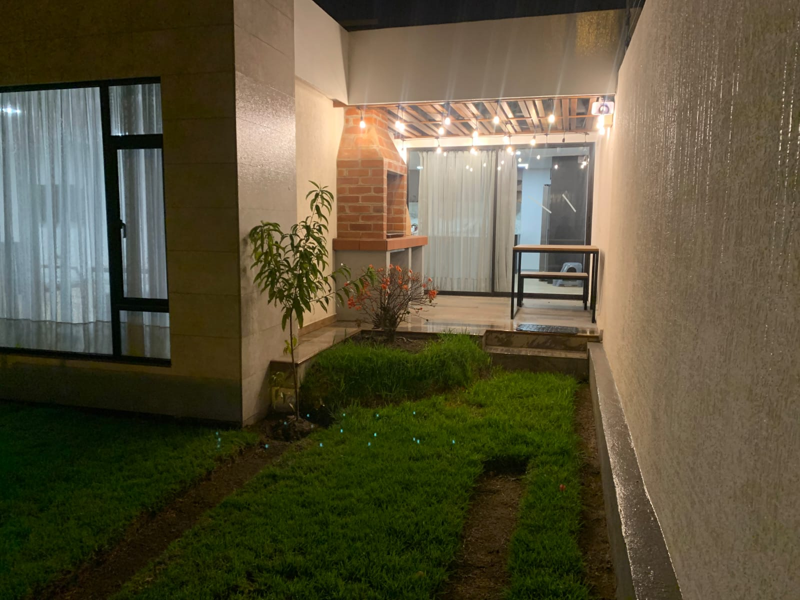
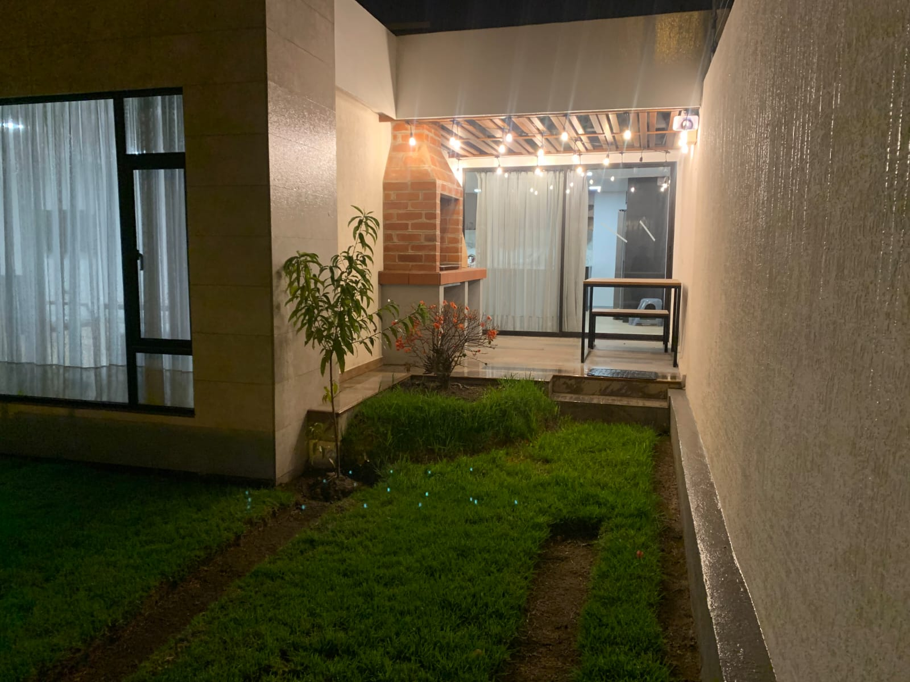

Residencia Quezada Erreyes
Quito, Ecuador
El proyecto Quezada Erreyes, está ubicado en el sector del Condado, a 3 cuadras del estadio de Liga Deportiva Universitaria.
Implantado en un terreno de 340 m2, adosado al lado occidental. Sus espacios amplios con ejes a 4 y 5 metros, proveen amplitud e iluminación por sus grandes ventanales piso-techo.
Jardines en todo el perímetro del proyecto, proveen belleza y paz al entorno. Sus gradas de ingreso con una leve elevación, están flotando e iluminadas desde la parte inferior. El hall de ingreso con su columna en porcelanato maderado y su cielo de madera da la imagen de fortaleza y calidez dando la bienvenida al visitante.
En el costado del ingreso una fuente de agua sobre piedras de río, pérgolas sólidas de acero pintado en gris nos llevan a evocar la niñez y el fondo con sus plantas y todo el entorno, proveen un ambiente lúdico y lleno de paz y armonía.


 
